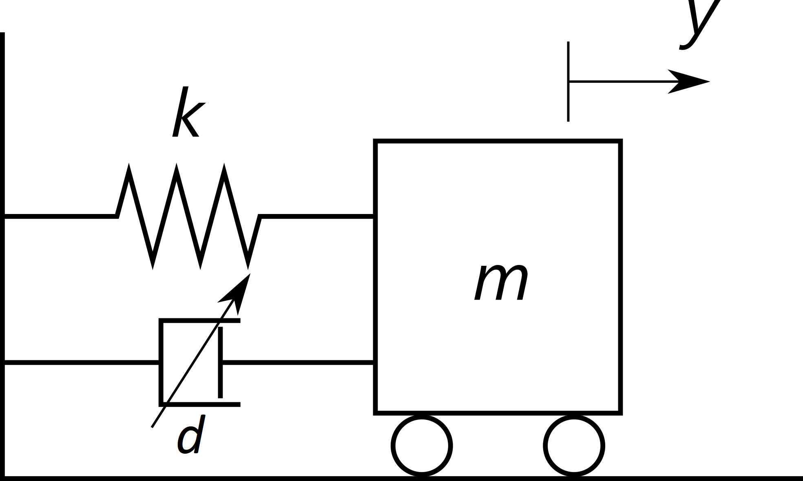

Semi-active Damper
Example
SemiActiveDamper/
Problem Description
A vehicle contacts the wall through the spring and damper:

-
The state vector of the system is x=[y,\dot{y}]^T, where y is the position of the vehicle.
-
The input is the damping coefficient d, which is constrained with 0\leq d \leq 1.
-
The dynamic equation of this semi-active damper is m\ddot{y} = -ky-d\dot{y}, where k = 1 and m=1.
The task is to control the vehicle's position y to 0 from an initial position.
OCP in ParNMPC
The inequality constraints are transfered into equality constraints by introducing an extra dummy input d_s.
The underlying OCP defined in ParNMPC is formulated as:
- State: x=[y,\dot{y}]^T.
- Input: u=[d,d_s].
- Parameter: p is empty.
- L(u,x,p) = \frac{1}{2}\|x-x_{ref}\|_{Q}^2+\frac{1}{2}\|u-u_{ref}\|_{R}^2 - rd_s.
- C(u,x,p) = (d-\frac{1}{2})^2 + d_s^2-\frac{1}{4}.
- f(u,x,p) = [\dot{y},-y-d\dot{y}]^T.
- Prediction horizon T=5.
- Number of the discritization grids N=48.
- Discretization method: Euler.
Closed-loop Simulation using ParNMPC
Step 1. NMPC problem formulation
See Workflow of ParNMPC > NMPC Problem Formulation.
Example
SemiActiveDamper/NMPC_Problem_Formulation.m
Step 2. Code generation and deployment in Simulink
See Workflow of ParNMPC > Code Generation and Deployment > Simulink.
-
Code generation
Example
SemiActiveDamper/Simu_Simulink_Setup.m -
Deployment
Example
SemiActiveDamper/Simu_Simulink.slx